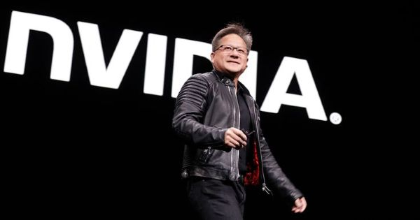
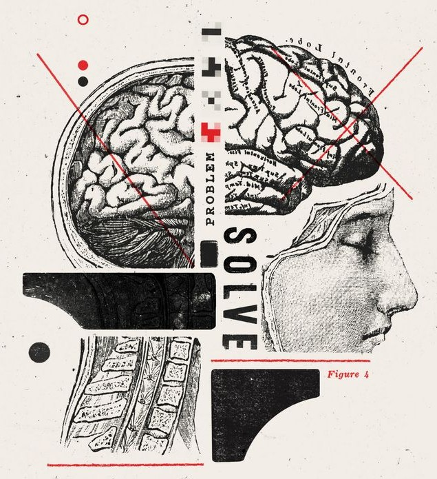

AI at the Helm: Strategic Signals from the 2025 Stanford Index
| By Shaswat Gupta |
1. AI performance on demanding benchmarks continues to improve. In 2023, researchers introduced new benchmarks—MMMU, GPQA, and SWE-bench—to test the limits of advanced AI systems. Just a year later, performance sharply increased: scores rose by 18.8, 48.9, and 67.3 percentage points on MMMU, GPQA, and SWE-bench, respectively. Beyond benchmarks, AI systems made major strides in generating high-quality video, and in some settings, language model agents even outperformed humans in programming tasks with limited time budgets.
2. AI is increasingly embedded in everyday life. From healthcare to transportation, AI is rapidly moving from the lab to daily life. In 2023, the FDA approved 223 AI-enabled medical devices, up from just six in 2015. On the roads, self-driving cars are no longer experimental: Waymo, one of the largest U.S. operators, provides over 150,000 autonomous rides each week, while Baidu’s affordable Apollo Go robotaxi fleet now serves numerous cities across China.
3. Business is all in on AI, fueling record investment and usage, as research continues to show strong productivity impacts. In 2024, U.S. private AI investment grew to $109.1 billion—nearly 12 times China’s $9.3 billion and 24 times the U.K.’s $4.5 billion. Generative AI saw particularly strong momentum, attracting $33.9 billion globally in private investment—an 18.7% increase from 2023. AI business usage is also accelerating: 78% of organizations reported using AI in 2024, up from 55% the year before. Meanwhile, a growing body of research confirms that AI boosts productivity and, in most cases, helps narrow skill gaps across the workforce.
4. The U.S. still leads in producing top AI models—but China is closing the performance gap. In 2024, U.S.-based institutions produced 40 notable AI models, compared to China’s 15 and Europe’s three. While the U.S. maintains its lead in quantity, Chinese models have rapidly closed the quality gap: performance differences on major benchmarks such as MMLU and HumanEval shrank from double digits in 2023 to near parity in 2024. China continues to lead in AI publications and patents. Model development is increasingly global, with notable launches from the Middle East, Latin America, and Southeast Asia.
5. The responsible AI ecosystem evolves—unevenly. AI-related incidents are rising sharply, yet standardized RAI evaluations remain rare among major industrial model developers. However, new benchmarks like HELM Safety, AIR-Bench, and FACTS offer promising tools for assessing factuality and safety. Among companies, a gap persists between recognizing RAI risks and taking meaningful action. In contrast, governments are showing increased urgency: In 2024, global cooperation on AI governance intensified, with organizations including the OECD, EU, U.N., and African Union releasing frameworks focused on transparency, trustworthiness, and other core responsible AI principles.
6. Global AI optimism is rising—but deep regional divides remain. In countries like China (83%), Indonesia (80%), and Thailand (77%), strong majorities see AI products and services as more beneficial than harmful. In contrast, optimism remains far lower in places like Canada (40%), the United States (39%), and the Netherlands (36%). Still, sentiment is shifting: Since 2022, optimism has grown significantly in several previously skeptical countries, including Germany (+10%), France (+10%), Canada (+8%), Great Britain (+8%), and the United States (+4%).
7. AI becomes more efficient, affordable, and accessible. Driven by increasingly capable small models, the inference cost for a system performing at the level of GPT-3.5 dropped over 280-fold between November 2022 and October 2024. At the hardware level, costs have declined by 30% annually, while energy efficiency has improved by 40% each year. Open-weight models are closing the gap with closed models, reducing the performance difference from 8% to just 1.7% on some benchmarks in a single year. Together, these trends are rapidly lowering the barriers to advanced AI.
8. Governments are stepping up on AI—with regulation and investment. In 2024, U.S. federal agencies introduced 59 AI-related regulations—more than double the number in 2023—and issued by twice as many agencies. Globally, legislative mentions of AI rose 21.3% across 75 countries since 2023, marking a ninefold increase since 2016. Alongside growing attention, governments are investing at scale: Canada pledged $2.4 billion, China launched a $47.5 billion semiconductor fund, France committed €109 billion, India pledged $1.25 billion, and Saudi Arabia’s Project Transcendence represents a $100 billion initiative.
9. AI and computer science education is expanding—but gaps in access and readiness persist. Two-thirds of countries now offer or plan to offer K–12 CS education—twice as many as in 2019—with Africa and Latin America making the most progress. In the U.S., the number of graduates with bachelor’s degrees in computing has increased 22% over the last 10 years. Yet access remains limited in many African countries due to basic infrastructure gaps like electricity. In the U.S., 81% of K–12 CS teachers say AI should be part of foundational CS education, but less than half feel equipped to teach it.
10. Industry is racing ahead in AI—but the frontier is tightening. Nearly 90% of notable AI models in 2024 came from industry, up from 60% in 2023, while academia remains the top source of highly cited research. Model scale continues to grow rapidly—training compute doubles every five months, datasets every eight, and power use annually. Yet performance gaps are shrinking: the Elo skill score difference between the top and 10th-ranked models fell from 11.9% to 5.4% in a year, and the top two are now separated by just 0.7%. The frontier is increasingly competitive—and increasingly crowded.
11. AI earns top honors for its impact on science. AI’s growing importance is reflected in major scientific awards: Two Nobel Prizes recognized work that led to deep learning (physics) and to its application to protein folding (chemistry), while the Turing Award honored groundbreaking contributions to reinforcement learning.
12. Complex reasoning remains a challenge. AI models excel at tasks like International Mathematical Olympiad problems but still struggle with complex reasoning benchmarks like PlanBench. They often fail to reliably solve logic tasks even when provably correct solutions exist, limiting their effectiveness in high-stakes settings where precision is critical.
Research and Development:
1. Industry continues to make significant investments in AI and leads in notable AI model development. While academia leads in highly cited research, industry’s lead in notable model development, highlighted in the two previous AI Index reports, has only grown more pronounced, with nearly 90% of notable models in 2024 (compared to 60% in 2023) originating from industry. Academia has remained the single leading institutional producer of highly cited (top 100) publications over the past three years.
2. China leads in AI research publication totals, while the United States leads in highly influential research. In 2023, China produced more AI publications (23.2%) and citations (22.6%) than any other country. Over the past three years, U.S. institutions have contributed the most top-100-cited AI publications.
3. AI publication totals continue to grow and increasingly dominate computer science. Between 2013 and 2023, the total number of AI publications in venues related to computer science and other scientific disciplines nearly tripled, increasing from approximately 102,000 to over 242,000. Proportionally, AI’s share of computer science publications has risen from 21.6% in 2013 to 41.8% in 2023.
4. The United States continues to be the leading source of notable AI models. In 2024, U.S.-based institutions produced 40 notable AI models, significantly surpassing China’s 15 and Europe’s combined total of three. In the past decade, more notable machine learning models have originated from the United States than any other country.
5. AI models get increasingly bigger, more computationally demanding, and more energy intensive. New research finds that the training compute for notable AI models doubles approximately every five months, dataset sizes for training LLMs every eight months, and the power required for training annually. Large-scale industry investment continues to drive model scaling and performance gains.
6. AI models become increasingly cheaper to use. The cost of querying an AI model that scores the equivalent of GPT-3.5 (64.8) on MMLU, a popular benchmark for assessing language model performance, dropped from $20.00 per million tokens in November 2022 to just $0.07 per million tokens by October 2024 (Gemini-1.5-Flash-8B)—a more than 280-fold reduction in approximately 18 months. Depending on the task, LLM inference prices have fallen anywhere from 9 to 900 times per year.
7. AI patenting is on the rise. Between 2010 and 2023, the number of AI patents has grown steadily and significantly, ballooning from 3,833 to 122,511. In just the last year, the number of AI patents has risen 29.6%. As of 2023, China leads in total AI patents, accounting for 69.7% of all grants, while South Korea and Luxembourg stand out as top AI patent producers on a per capita basis.
8. AI hardware gets faster, cheaper, and more energy efficient. New research suggests that machine learning hardware performance, measured in 16-bit floating-point operations, has grown 43% annually, doubling every 1.9 years. Price performance has improved, with costs dropping 30% per year, while energy efficiency has increased by 40% annually.
9. Carbon emissions from AI training are steadily increasing. Training early AI models, such as AlexNet (2012), had modest amounts of carbon emissions at 0.01 tons. More recent models have significantly higher emissions for training: GPT-3 (2020) at 588 tons, GPT-4 (2023) at 5,184 tons, and Llama 3.1 405B (2024) at 8,930 tons. For perspective, the average American emits 18 tons of carbon per year.
Shaswat Gupta is an MS Computer Science student at ETH Zurich, and a rank 1 gold medalist from IIT Bombay. With hands-on experience as an ML engineer at organizations like the World Bank, AB InBev, ISB, and startups, Shaswat specializes in machine learning, scalable engineering, and data-driven solutions. Known for his analytical rigor combined with a creative flair in music, poetry, journalism, and public speaking, Shaswat loves tackling challenging problems and welcomes exciting collaborations.
Connect with me:
- LinkedIn: Shaswat Gupta
- Email: shagupta@ethz.ch
Technical Performance
1. Industry continues to make significant investments in AI and leads in notable AI model development. While academia leads in highly cited research, industry’s lead in notable model development, highlighted in the two previous AI Index reports, has only grown more pronounced, with nearly 90% of notable models in 2024 (compared to 60% in 2023) originating from industry. Academia has remained the single leading institutional producer of highly cited (top 100) publications over the past three years.
2. China leads in AI research publication totals, while the United States leads in highly influential research. In 2023, China produced more AI publications (23.2%) and citations (22.6%) than any other country. Over the past three years, U.S. institutions have contributed the most top-100-cited AI publications.
3. AI publication totals continue to grow and increasingly dominate computer science. Between 2013 and 2023, the total number of AI publications in venues related to computer science and other scientific disciplines nearly tripled, increasing from approximately 102,000 to over 242,000. Proportionally, AI’s share of computer science publications has risen from 21.6% in 2013 to 41.8% in 2023.
4. The United States continues to be the leading source of notable AI models. In 2024, U.S.-based institutions produced 40 notable AI models, significantly surpassing China’s 15 and Europe’s combined total of three. In the past decade, more notable machine learning models have originated from the United States than any other country.
5. AI models get increasingly bigger, more computationally demanding, and more energy intensive. New research finds that the training compute for notable AI models doubles approximately every five months, dataset sizes for training LLMs every eight months, and the power required for training annually. Large-scale industry investment continues to drive model scaling and performance gains.

6. AI models become increasingly cheaper to use. The cost of querying an AI model that scores the equivalent of GPT-3.5 (64.8) on MMLU, a popular benchmark for assessing language model performance, dropped from $20.00 per million tokens in November 2022 to just $0.07 per million tokens by October 2024 (Gemini-1.5-Flash-8B)—a more than 280-fold reduction in approximately 18 months. Depending on the task, LLM inference prices have fallen anywhere from 9 to 900 times per year.
7. AI patenting is on the rise. Between 2010 and 2023, the number of AI patents has grown steadily and significantly, ballooning from 3,833 to 122,511. In just the last year, the number of AI patents has risen 29.6%. As of 2023, China leads in total AI patents, accounting for 69.7% of all grants, while South Korea and Luxembourg stand out as top AI patent producers on a per capita basis.
8. AI hardware gets faster, cheaper, and more energy efficient. New research suggests that machine learning hardware performance, measured in 16-bit floating-point operations, has grown 43% annually, doubling every 1.9 years. Price performance has improved, with costs dropping 30% per year, while energy efficiency has increased by 40% annually.
9. Carbon emissions from AI training are steadily increasing. Training early AI models, such as AlexNet (2012), had modest amounts of carbon emissions at 0.01 tons. More recent models have significantly higher emissions for training: GPT-3 (2020) at 588 tons, GPT-4 (2023) at 5,184 tons, and Llama 3.1 405B (2024) at 8,930 tons. For perspective, the average American emits 18 tons of carbon per year.
10. AI masters new benchmarks faster than ever. In 2023, AI researchers introduced several challenging new benchmarks, including MMMU, GPQA, and SWE-bench, aimed at testing the limits of increasingly capable AI systems. By 2024, AI performance on these benchmarks saw remarkable improvements, with gains of 18.8 and 48.9 percentage points on MMMU and GPQA, respectively. On SWE-bench, AI systems could solve just 4.4% of coding problems in 2023—a figure that jumped to 71.7% in 2024.
11. Open-weight models catch up. Last year’s AI Index revealed that leading open-weight models lagged significantly behind their closed-weight counterparts. By 2024, this gap had nearly disappeared. In early January 2024, the leading closed-weight model outperformed the top open-weight model by 8.0% on the Chatbot Arena Leaderboard. By February 2025, this gap had narrowed to 1.7%.
12. The gap closes between Chinese and U.S. models. In 2023, leading American models significantly outperformed their Chinese counterparts—a trend that no longer holds. At the end of 2023, performance gaps on benchmarks such as MMLU, MMMU, MATH, and HumanEval were 17.5, 13.5, 24.3, and 31.6 percentage points, respectively. By the end of 2024, these margins had narrowed substantially to 0.3, 8.1, 1.6, and 3.7 percentage points.
13. AI model performance converges at the frontier. According to last year’s AI Index, the Elo score difference between the top and 10th-ranked model on the Chatbot Arena Leaderboard was 11.9%. By early 2025, this gap had narrowed to 5.4%. Likewise, the difference between the top two models shrank from 4.9% in 2023 to just 0.7% in 2024. The AI landscape is becoming increasingly competitive, with high-quality models now available from a growing number of developers.
14. New reasoning paradigms like test-time compute improve model performance. In 2024, OpenAI introduced models like o1 and o3 that are designed to iteratively reason through their outputs. This test-time compute approach dramatically improved performance, with o1 scoring 74.4% on an International Mathematical Olympiad qualifying exam, compared to GPT-4o’s 9.3%. However, this enhanced reasoning comes at a cost: o1 is nearly six times more expensive and 30 times slower than GPT-4o.

15. More challenging benchmarks are continually being proposed. The saturation of traditional AI benchmarks like MMLU, GSM8K, and HumanEval, coupled with improved performance on newer, more challenging benchmarks such as MMMU and GPQA, has pushed researchers to explore additional evaluation methods for leading AI systems. Notable among these are Humanity’s Last Exam, a rigorous academic test where the top system scores just 8.80%; FrontierMath, a complex mathematics benchmark where AI systems solve only 2% of problems; and BigCodeBench, a coding benchmark where AI systems achieve a 35.5% success rate—well below the human standard of 97%.
16. High-quality AI video generators demonstrate significant improvement. In 2024, several advanced AI models capable of generating high-quality videos from text inputs were launched. Notable releases include OpenAI’s SORA, Stable Video Diffusion 3D and 4D, Meta’s Movie Gen, and Google DeepMind’s Veo 2. These models produce videos of significantly higher quality compared to those from 2023.
17. Smaller models drive stronger performance. In 2022, the smallest model registering a score higher than 60% on MMLU was PaLM, with 540 billion parameters. By 2024, Microsoft’s Phi-3-mini, with just 3.8 billion parameters, achieved the same threshold—the equivalent of a 142-fold reduction in two years.
18. Complex reasoning remains a problem. Even though the addition of mechanisms such as chain-of-thought reasoning has significantly improved the performance of LLMs, these systems still cannot reliably solve problems for which provably correct solutions can be found using logical reasoning, such as arithmetic and planning, especially on instances larger than those they were trained on. This has a significant impact on the trustworthiness of these systems and their suitability in high-risk applications.
19. AI agents show early promise. The launch of RE-Bench in 2024 introduced a rigorous benchmark for evaluating complex tasks for AI agents. In short time-horizon settings (two-hour budget), top AI systems score four times higher than human experts, but as the time budget increases, human performance surpasses AI—outscoring it two to one at 32 hours. AI agents already match human expertise in select tasks, such as writing Triton kernels, while delivering results faster and at lower costs.
Economy
1. Global private AI investment hits record high with 26% growth. Corporate AI investment reached $252.3 billion in 2024, with private investment climbing 44.5% and mergers and acquisitions up 12.1% from the previous year. The sector has experienced dramatic expansion over the past decade, with total investment growing more than thirteenfold since 2014.
2. Generative AI funding soars. Private investment in generative AI reached $33.9 billion in 2024, up 18.7% from 2023 and over 8.5 times higher than 2022 levels. The sector now represents more than 20% of all AI-related private investment.
3. The U.S. widens its lead in global AI private investment. U.S. private AI investment hit $109.1 billion in 2024, nearly 12 times higher than China’s $9.3 billion and 24 times the U.K.’s $4.5 billion. The gap is even more pronounced in generative AI, where U.S. investment exceeded the combined total of China and the European Union plus the U.K. by $25.4 billion, expanding on its $21.8 billion gap in 2023.
4. Use of AI climbs to unprecedented levels. In 2024, the proportion of survey respondents reporting AI use by their organizations jumped to 78% from 55% in 2023. Similarly, the number of respondents who reported using generative AI in at least one business function more than doubled—from 33% in 2023 to 71% last year.
5. AI is beginning to deliver financial impact across business functions, but most companies are early in their journeys. Most companies that report financial impacts from using AI within a business function estimate the benefits as being at low levels. 49% of respondents whose organizations use AI in service operations report cost savings, followed by supply chain management (43%) and software engineering (41%), but most of them report cost savings of less than 10%. With regard to revenue, 71% of respondents using AI in marketing and sales report revenue gains, 63% in supply chain management, and 57% in service operations, but the most common level of revenue increases is less than 5%.
6. Use of AI shows dramatic shifts by region, with Greater China gaining ground. While North America maintains its leadership in organizations’ use of AI, Greater China demonstrated one of the most significant year-over-year growth rates, with a 27 percentage point increase in organizational AI use. Europe followed with a 23 percentage point increase, suggesting a rapidly evolving global AI landscape and intensifying international competition in AI implementation.
7. China’s dominance in industrial robotics continues despite slight moderation. In 2023, China installed 276,300 industrial robots, six times more than Japan and 7.3 times more than the United States. Since surpassing Japan in 2013, when China accounted for 20.8% of global installations, its share has risen to 51.1%. While China continues to install more robots than the rest of the world combined, this margin narrowed slightly in 2023, marking a modest moderation in its dramatic expansion.
8. Collaborative and interactive robot installations become more common. In 2017, collaborative robots represented a mere 2.8% of all new industrial robot installations, a figure that climbed to 10.5% by 2023. Similarly, 2023 saw a rise in service robot installations across all application categories except medical robotics. This trend indicates not just an overall increase in robot installations but also a growing emphasis on deploying robots for human-facing roles.
9. AI is driving significant shifts in energy sources, attracting interest in nuclear energy. Microsoft announced a $1.6 billion deal to revive the Three Mile Island nuclear reactor to power AI, while Google and Amazon have also secured nuclear energy agreements to support AI operations.
10. AI boosts productivity and bridges skill gaps. Last year’s AI Index was among the first reports to highlight research showing AI’s positive impact on productivity. This year, additional studies reinforced those findings, confirming that AI boosts productivity and, in most cases, helps narrow the gap between low- and high-skilled workers.
Shaswat Gupta is an MS Computer Science student at ETH Zurich, and a rank 1 gold medalist from IIT Bombay. With hands-on experience as an ML engineer at organizations like the World Bank, AB InBev, ISB, and startups, Shaswat specializes in machine learning, scalable engineering, and data-driven solutions. Known for his analytical rigor combined with a creative flair in music, poetry, journalism, and public speaking, Shaswat loves tackling challenging problems and welcomes exciting collaborations.
Connect with me:
- LinkedIn: Shaswat Gupta
- Email: shagupta@ethz.ch